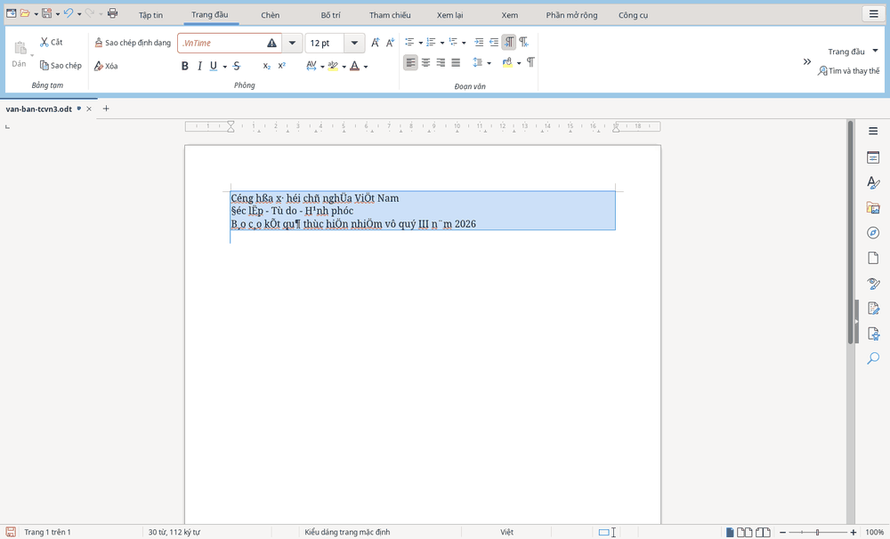
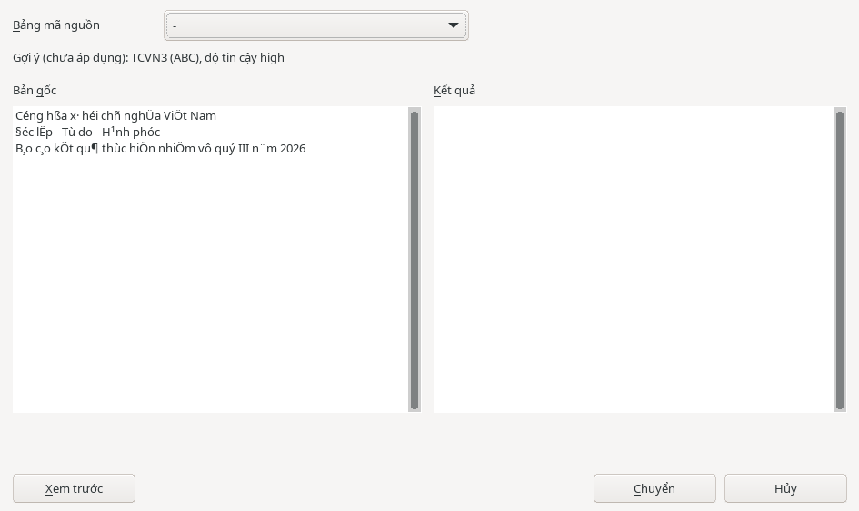

Công cụ HST
Chuyển TCVN3/VNI sang Unicode
Tài liệu cũ dùng phông .VnTime (TCVN3/ABC) hoặc VNI-Times có thể hiện thành ký tự lạ trên máy mới. Dùng công cụ chuyển mã trong HST Writer để chuyển sang Unicode.

Chọn văn bản và chuyển mã
- Mở tài liệu trong HST Writer.
- Chọn đoạn cần chuyển, hoặc nhấn Ctrl+A để chọn tất cả.
- Chọn . Bạn cũng có thể tìm lệnh trên thẻ .
- Trong hộp thoại , đọc dòng .
- Tự chọn phù hợp với văn bản: TCVN3 hoặc VNI.
- Bấm , rồi đối chiếu với .
- Khi kết quả phù hợp, bấm .
Bạn cần chọn bảng mã nguồn. Gợi ý không được áp dụng tự động.

Những gì được giữ lại
- Định dạng đậm, nghiêng và cỡ chữ được giữ nguyên.
- Phông cũ được đổi sang phông Unicode tương ứng, thường là Times New Roman.
- Đoạn đã là Unicode được bỏ qua.
Nếu kết quả chưa phù hợp, nhấn Ctrl+Z để khôi phục.